1.2.1 Training Data Collection Using QGIS¶
1 Background¶
Training data is instrumental to supervised image classification. The training dataset is a labeled set of data that is used to inform or “train” a classifier. The trained classifier can then be applied to new data to create a classification. For example, land cover training data will contain examples of each class in the study’s legend. Based on these labels, the classifier can predict the most likely land cover class for each pixel in an image. This is an example of a categorical classification and the training labels are therefore categorical. By contrast, a continuous variable (e.g. percent tree cover) can be predicted using continuous training labels.
This tutorial will demonstrate how to collect categorical training data for land cover classification using QGIS. Users should adjust the various components to match their project objectives. Here, the process is demonstrated for the country of Colombia and for a simple legend of four land cover classes: Forest, Water, Herbaceous, and Developed.
1.1 QGIS¶
Quantum GIS (QGIS) is an open source GIS that runs on Windows, Linux, and Mac OS X. Users should consult the QGIS webpage for background information and installation instructions. This tutorial is based on the longterm release Version 3.10.10. For the core features of this tutorial, users will only need QGIS installed and an internet connection.
2 Learning Objectives¶
At the end of this exercise, you will be able to:
Create a new shapefile layer in QGIS.
Load multiple sources of high resolution imagery to use as reference.
Collect training data for a categorical classification.
2.1 Pre-requisites for this module¶
QGIS concepts
Installation
Creating, saving, and loading a project
Installing and using plugins
Remote sensing concepts
Basic understanding on theories involved in image classification.
Defining a thematic legend
3. Training Data Collection¶
3.1 Overview¶
The process for collecting training data in QGIS are detailed in the steps below. The process can be generally described as three primary steps:
Creating a new shapefile layer for storing the training data.
Loading a basemap using a QGIS plugin.
Collecting the training data by manually defining training points.
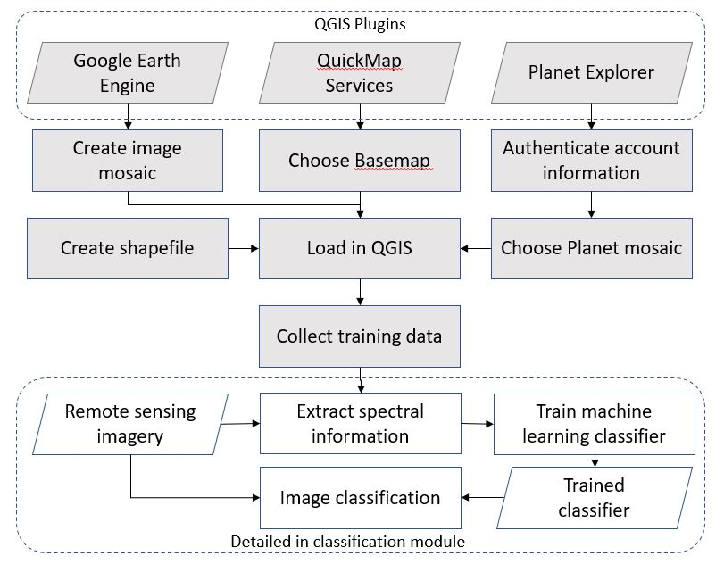
3.2 Creating a new layer¶
This tutorial will demonstrate how to create training data that are point geometries. A similar process can be used with polygon data, but keep in mind that it is generally recommended to have more diverse training regions to minimize the effect of spatial autocorrelation.
To start, we will need to define a new shapefile layer.
Select Layer -> Create Layer -> New Shapefile Layer….
Choose a filename to save your training data (in the example below I use the name ‘training_data_colombia_v1.shp’
For Geometry type choose Point.
Choose EPSG:4326 - WGS 84 for the projection.
Delete the ‘id’ field by selecting it in the Fields List and selecting Remove Field.
Add a new field of type Whole number named ‘class’ by selecting Add to fields list.
Your panel should look like this:
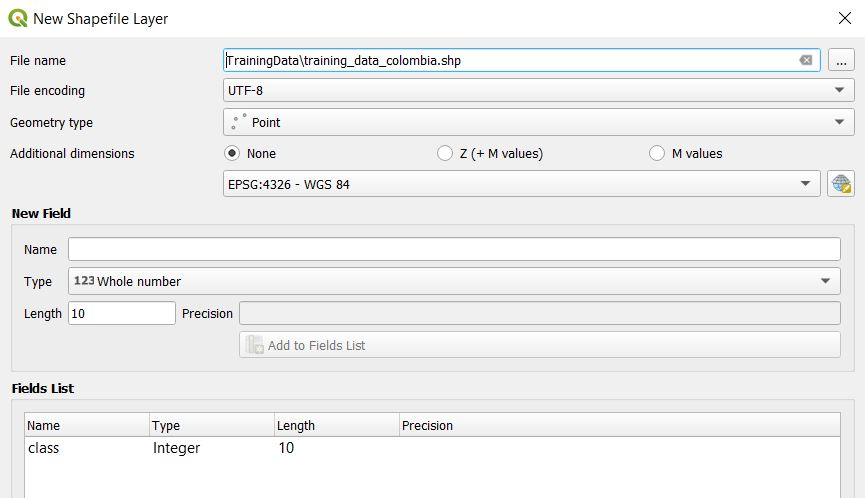
3.3 Load baselayers¶
Critical to the collection of training data is reference data, and for most purposes it is sufficient to use high-resolution imagery. Two critical factors in the selection of reference data are:
The target classes can be distinguished through visible interpretation.
The time of the reference imagery overlaps the input data used for classification.
Luckily, there are numerous sources of high resolution reference imagery available directly within QGIS. The specific imagery to use will depend on your study period and region, but in general it is recommended to use as much data as possible.
The following plugins offer access to reference imagery. Each plugin works with QGIS Version 3.1.10. However, users of this tutorial should follow the instructions from the plugin creators to ensure proper installation.
Users should consider the options below and decide a source of reference data that matches the time period and geographic extent of your study region. Here, the process is demonstrated for Colombia and for the year 2018. This year was chosen because it overlaps the reference data and is sure to be in the middle of data used for analysis.
3.3.1 QuickMap Services¶
Who: NextGIS
What: High quality basemaps (Google, ESRI, Mapbox, etc)
When: Varies
QuickMap Services is a service for accessing and sharing geospatial data. This plugin allows access to the full collection of data including high-resolution basemaps from Google, ESRI, and Mapbox. Most of this data are compiled from various sources, meaning the acquisition date for a specific location might not be known. However, these are high quality datasets and are recommended to be used for reference to supplement the imagery described below.
To use:
Add the QuickMap Services plugin by going to Plugins and Manage and Install Plugins… and searching QuickMapServices and clicking the Install Plugin button.
Open the QMS search panel by going to the Web toolbar -> QuickMapServices -> Search QGMS Panel.
In the panel that appears on the right of the screen, search for ‘Satellite’ and choose a dataset by selecting Add. The basemap will be added to the map.
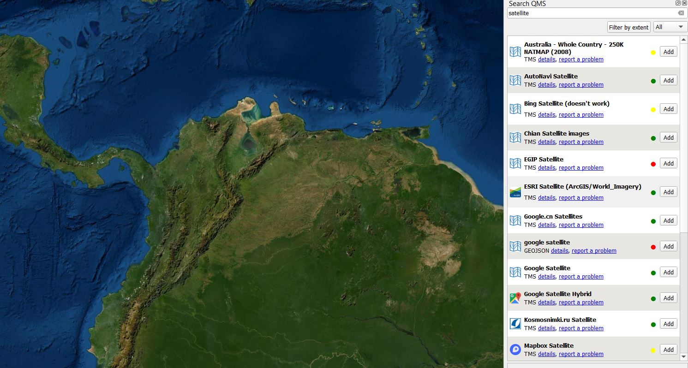
3.3.2. Planet Explorer¶
Who: Planet
What: Daily imagery, monthly mosaics, biannual mosaics
When: After 2016
The Planet constellation of satellites offer daily high-resolution imagery in 3-4 spectral bands. While the data archive is not fully open access, a username and password allows you to browse daily imagery and view reduced-quality preview imagery. Furthermore, the Norway Ministry of Climate and Environment reached an agreement with Planet, Airbus, and Konsberg Satellite Services to provide access to high-resolution imagery across the tropics. At the time of writing, tools for accessing this data are in early stages of development. However, one way that Planet is supporting access of this data is through the QGIS Plugin Planet Explorer.
To use:
Detailed instructions for installing the plugin can be found on the Planet webpage.
Add the plugin panel by going to Web -> Planet Explorer -> Planet Explorer.
Select Mosaic Series in the plugin panel.
Double click on one of the biannual or monthly mosaics to add it to the map.
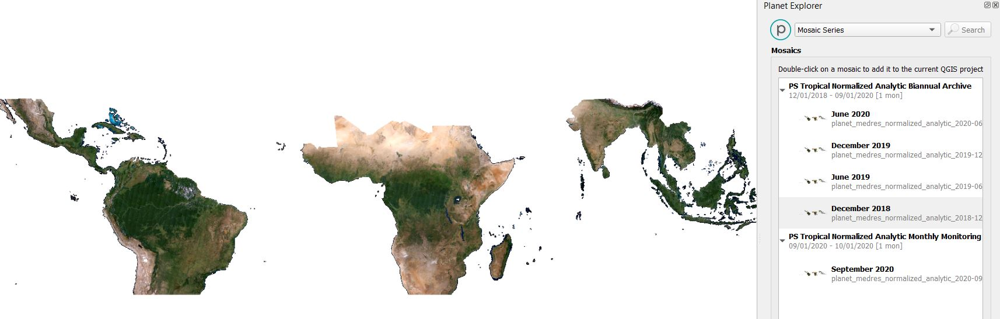
3.3.3 Google Earth Engine¶
Who: Google Earth Engine and Gennadii Donchyts.
What: Most open access earth observation data (e.g. Landsat, Sentinel and MODIS).
When: As early as 1972 for Landsat.
Google Earth Engine (GEE) is a cloud platform for analyzing geospatial data. Access to GEE is provided through a Javascript and Python API. While Google does not currently provide a QGIS plugin, recently Gennadii Donchyts released a beta plugin based on the Python API. This plugin allows for the incredible processing power and data storage of GEE with the user interface of QGIS. However it is also experimental and users should consult the Github repository prior to use.
To use:
Install the plugin using with the User Guide.
Add the Python console by going to Plugins -> Python Console
Browse example code in the plugin repository. It’s also worth getting familiar with Google Earth Engine if you are a new user. This tutorial does not cover GEE basics and users should consult GEE documentation for advanced usage.
In the Python Console, make sure Earth Engine is installed correctly with the following code:
import ee
print(ee.String('The plugin is working!').getInfo())
Your console should look like this:
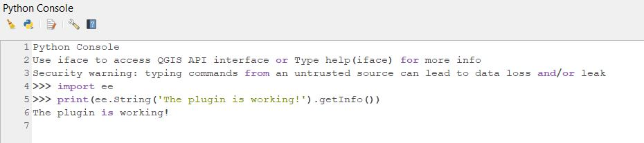
Load the Map function from the ee_plugin module:
from ee_plugin import Map
Set the map view to the boundary of Colombia.
countries = ee.FeatureCollection("USDOS/LSIB_SIMPLE/2017"
colombia = countries.filter(ee.Filter.eq('country_na', 'Colombia'))
Map.centerObject(colombia, 8)
Create a Sentinel-2 composite for 2019 and add it to the map.
s1_collection = ee.ImageCollection("COPERNICUS/S2_SR")
s1_composite = s1_collection.filterBounds(colombia) \
.filterDate('2019-01-01','2019-12-31') \
.median()
vis = {'bands': ['B4', 'B3', 'B2'], 'min': 0, 'max': 1250}
Map.addLayer(s1_composite, vis, 'Sentinel 2 2019')
You should see a very cloudy image added to the map
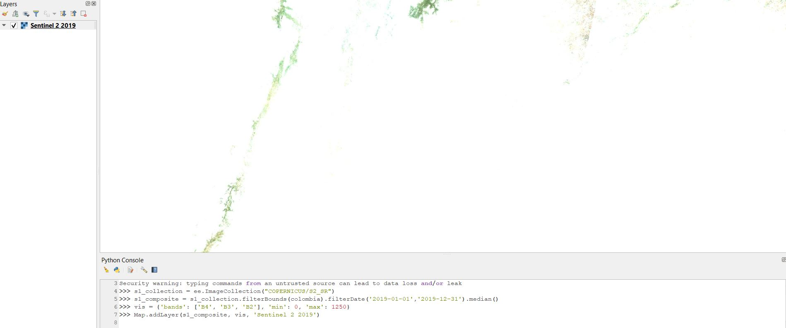
Now let’s try it again when applying the cloud mask prior to making the mosaic:
def maskS2clouds(image):
return image.updateMask(image.select('QA60').eq(0))
s1_composite_masked = s1_collection.filterBounds(colombia) \
.filterDate('2019-01-01','2019-12-31') \
.map(maskS2clouds) \
.median()
Map.addLayer(s1_composite_masked, vis, 'Sentinel 2 2019 Masked')
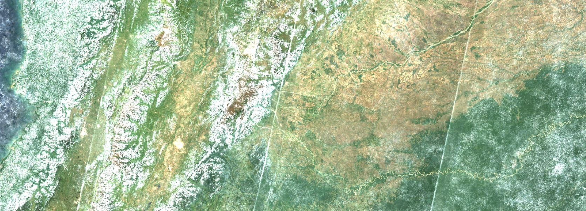
3.4 Collect training data¶
Once you have decided on reference imagery then it is time to start collecting training data. Going class by class, navigate your study region collecting point data. Here are a few considerations:
Training data should be representative of your entire study region. This means that collecting more data across the study area is better than a few large training areas.
Be sure to include examples on the edge of class boundaries, as these areas will be most challenging to distinguish in the classification stage.
There is no magic number for an adequant number of training points. Be prepared for this to be an interative process in which you collect training data, perform your analysis, and then collect more training data to address misclassification errors.
Take your time - this dataset will be invaluable to your research and can be to others as well.
Select the training data layer in the Layers panel.
Enable layer editing by selecting the button that looks like a pencil, Toggle Editing
Define a numeric class code. Here, we will use the following code:
1 Forest
2 Water
3 Herbaceous
4 Developed
Starting with the Forest class, click on the map to add a training point. In the panel that shows on the map you will have the option to fill out the class field for the point you just added. Since we are starting with Forest, use the class code 1. Based on the class codes above, you should use 2 for Water, 3 for Herbaceous, and 4 for developed. 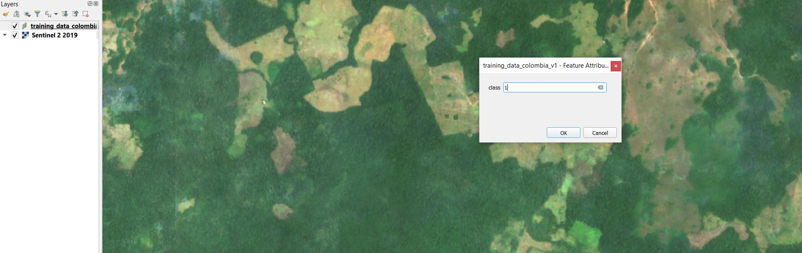
Select OK to save the training point.
Repeat for many Forest samples throughout your study region. It is advised to save the layer during the process by selecting the Save Layer Edits button.
Continue this process for each target map class.
Select the Toggle Editing button to stop editing the layer.
3.5 Visualizing training data¶
Once you have collected training data for each class, it helps to style them to see the distribution across the study area. Ideally, you want to have training points that are representative of the variability in the classes. Here, that means that we want to have enough forest, water, herbaceous, and developed points to ensure they fully represent these classes across Colombia.
Right class on the layer in the Layer panel and select Properties
On the left side of the Properties panel, select Control feature symbology 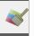
Select Categorized for the symbol type.
Under Value select the attribute containing the class label, in this case it is class
Select Classify to populate the symbology table. Optionally change the colors to your choosing.
Check the Legend values to match our legend. Your panel should look like this:
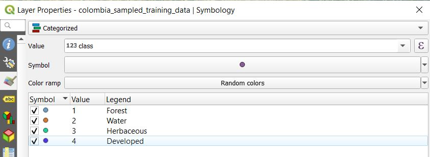
Select OK to apply the style.
Take some time to look at your sample and ensure there are not any major “gaps” in training data.
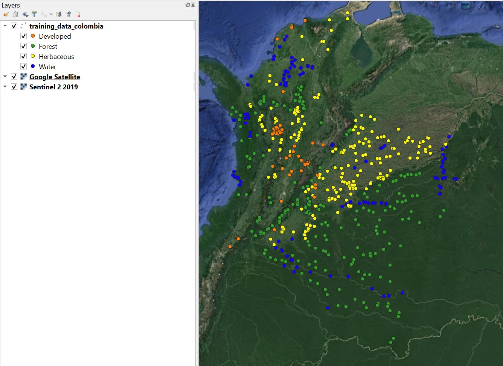
3.6 Adding unique ID¶
It is useful to have a unique identifier for each training point. This can be added to the layer Attribute Table.
Right click on the layer name in the Layer panel and selecting Open Attribute Table.
Add a new column by selecting the Open field calculator. 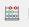
Under Output field name write ‘ID’.
Double click on the selector ‘row_number’. Your panel should look like this: 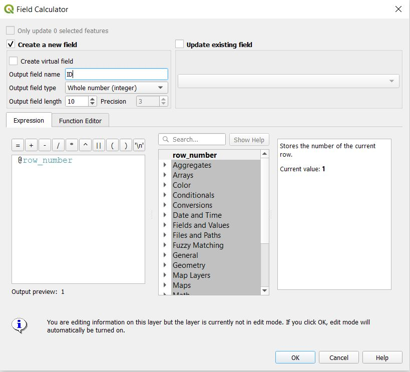
4. Frequently Asked Questions¶
Why are we using point geometries rather than polygons?
Polygon data can also be used as training data, but keep in mind that spatial autocorrelation will result in redundant information derived from each polygon. We therefore recommend collecting point samples that are representative of the entirety of the data rather than a few polygons.
How should I choose what data to use as reference?
The reference data should overlap in time and space with the data used in your analysis. If there are multiple data sources meeting this criteria, then the user should choose the data they find easiest to interpret based on their classification legend.
Does training data need to be derived under a probability-based sampling design?
No, there is no need to obtain training data using a probability-based design. However, if training data was created this way (e.g. an interpreted simple random sample), there is no reason it cannot be used for classification.
How many points do I need for each class?
There is no magic number for the number of training points for each class. It is generally recommended to use an iterative process, in which additional training data is added after performing a classification, then the classification is created again the process repeats until the results are deemed adequate.
Can training data be split to use part for validation?
If the training data were collected opportunistically, or in other words not using a probability sample, then it is generally not recommended to use it for validation since it will introduce bias.